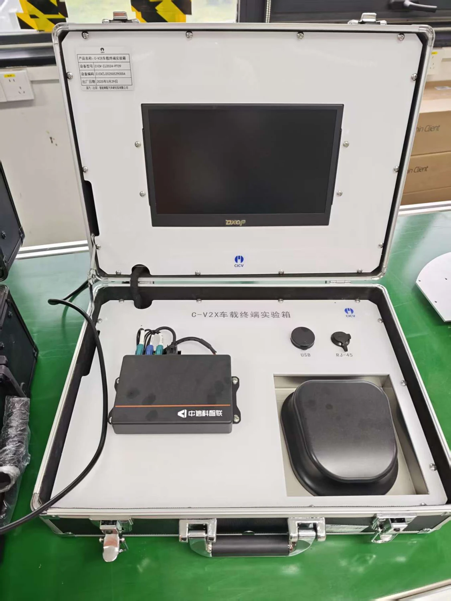

车载终端实验箱
实物照片显示 C-V2X 车载终端实验箱，配有显示屏、车载终端、USB 和 RJ-45 接口。终端外壳标注“中信科智联”。

路侧配套平台
实验室介绍PPT另列出“V2X移动式智能路侧融合平台”。车端与路侧平台可对应组织车路协同通信、路侧信息融合及协同决策实验。
待补充的开发资料
- 车载终端和路侧单元的型号、固件版本。
- 通信环境、网络配置和设备连接说明。
- SDK、消息集、数据样例和示例程序。
- 已验证场景、日志格式和实验负责人。
本页只整理已知设备与资料需求，不代表通信链路已经完成联调。